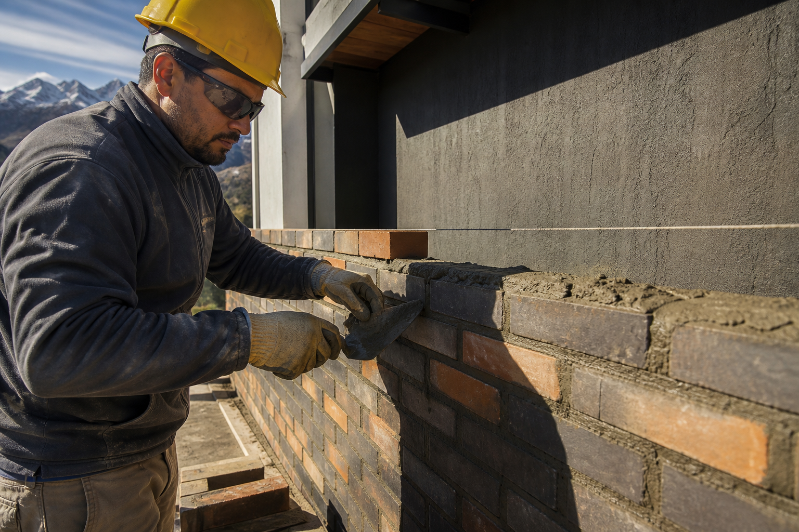
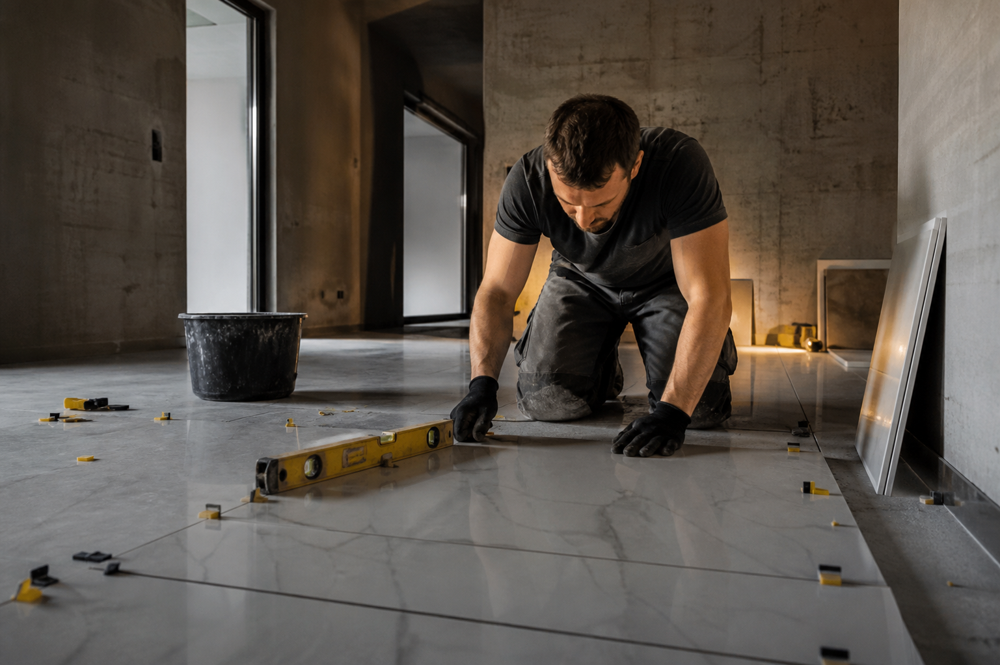
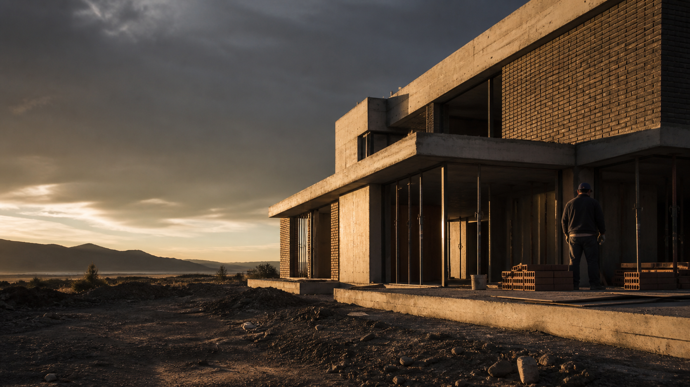
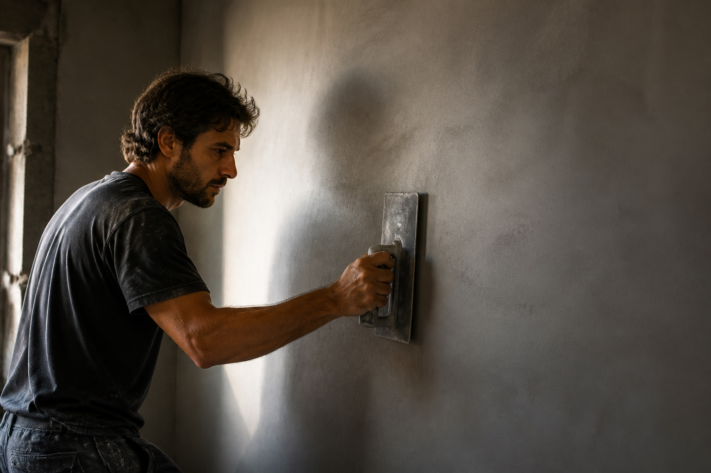
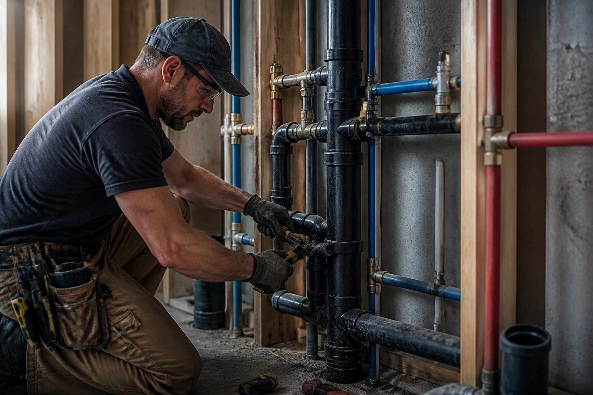
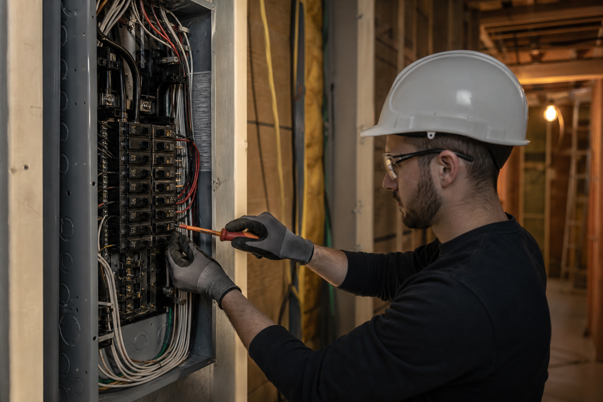
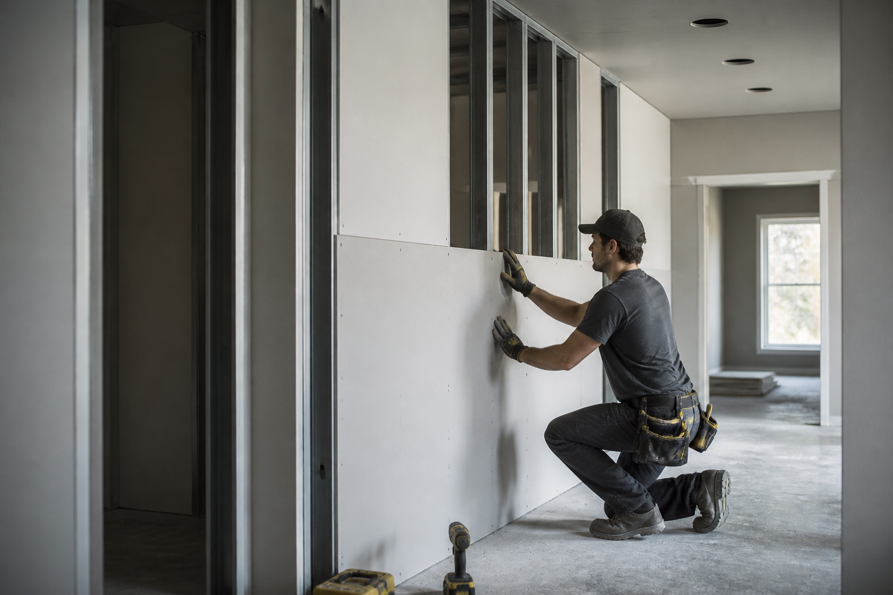
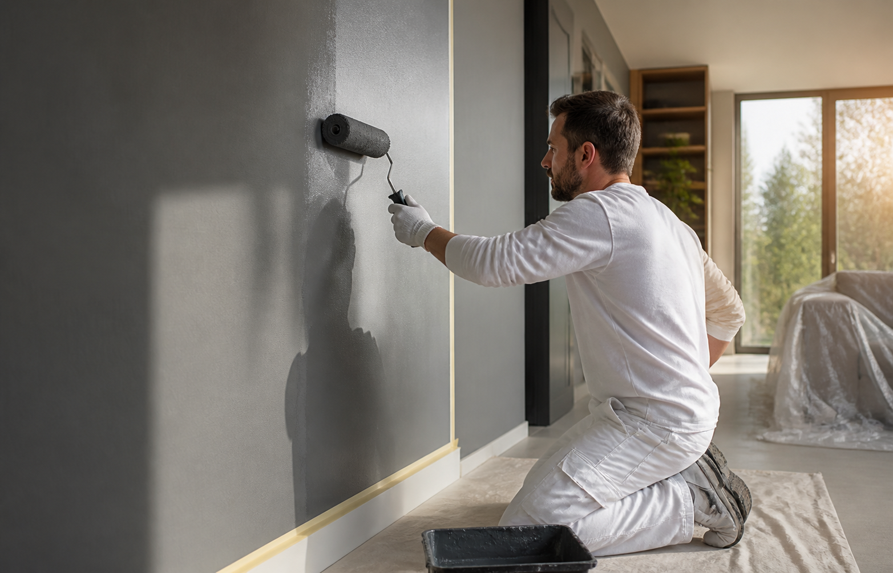

Construcciones en general
Obra nueva, ampliaciones y reformas integrales. Planificamos y ejecutamos cada etapa con orden y seguimiento personalizado.
- Obra nueva
- Ampliaciones
- Refacciones

CARGANDO EXPERIENCIAUn equipo, todas las especialidades. Trabajo responsable y terminaciones profesionales en Río Negro y Neuquén.



Obra nueva, ampliaciones y reformas integrales. Planificamos y ejecutamos cada etapa con orden y seguimiento personalizado.
Muros y divisiones con ladrillos cerámicos y macizos, respetando niveles, plomos y criterios constructivos.

03Superficies firmes y parejas, listas para recibir la terminación final, con especial cuidado en encuentros y niveles.
Colocación precisa para pisos y revestimientos, cuidando modulación, juntas, cortes y nivelación.

05Instalaciones y reparaciones para cocinas, baños y redes domiciliarias, integradas correctamente a la obra.

06Instalaciones y adecuaciones eléctricas domiciliarias pensadas para un funcionamiento práctico y seguro.

07Sistemas Durlock para transformar espacios con una ejecución rápida, limpia y versátil.

08Preparación y pintura de superficies interiores y exteriores con foco en la durabilidad.